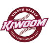

오리온과 이대성은 13일 오후 FA 계약을 위한 최종협상에 돌입했다.
이미 이대성은 KT와 최종협상이 결렬된 바 있다.
12일 내부회의를 거쳐 KT는 이대성 FA영입에서 철수했다. 때문에 오리온과 LG가 가장 유력한 구단으로 남게 됐다.
LG의 경우, 이대성에게 관심을 표명했지만, 이대성이 KT로 마음을 굳혔다는 얘기를 듣고 플랜 B로 선회했다.
이대성과 KT의 협상이 완전히 결렬된 시점에서는 준척급 선수와 협상을 끝낸 상태였다.
때문에 적극적으로 이대성의 영입에 뛰어들지 못했다.
| 순위 | 팀 | 경기 | 승 | 무 | 패 | 승률 | 게임차 | 연속 |
|---|---|---|---|---|---|---|---|---|
| 1 | 키움 | 7 | 6 | 0 | 1 | 0.857 | 0.0 | 4승 |
| 2 | NC | 6 | 5 | 0 | 1 | 0.833 | 0.5 | 1승 |
| 3 | 롯데 | 6 | 5 | 0 | 1 | 0.833 | 0.5 | 1패 |
| 4 | 두산 | 6 | 4 | 0 | 2 | 0.667 | 1.5 | 2승 |
| 5 | LG | 6 | 3 | 0 | 3 | 0.500 | 2.5 | 2승 |